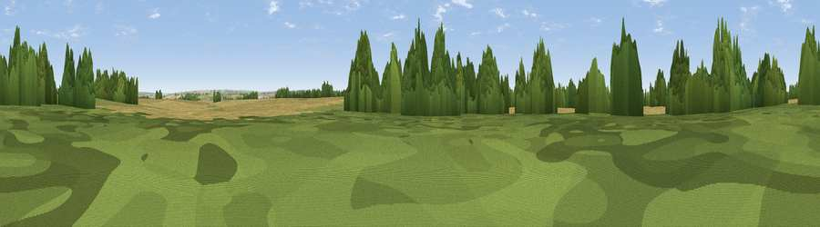

Coleby Wood
#29303 in England · top 58% of its area beats it · near Burton StatherWhere it is
The exact computed spot (SE 87260 19410). Click the marker for map links.
The view, rendered

A 360° render of this exact spot computed from the terrain model, tree cover and land cover — summer colours, afternoon light, calibrated against photographs of famous viewpoints. Real trees, hedges and buildings will differ in detail.
The panorama
Grey silhouette: terrain skyline in each direction (720 bearings, Earth curvature and refraction included). Dashed green: skyline with trees (+15 m) and buildings (+8 m) as obstacles. Blue strip: how far the ground is visible on each bearing.
Where the view opens
Wedge length = distance to the farthest visible ground on that bearing (vegetation-aware). Rings at 10, 25 and 50 km.
What fills the view
65% cropland · 18% woodland · 14% grassland · 2% built-up ·
Angular shares of the visible panorama (visual magnitude), not map area. Landscape diversity 0.44 (0–1 Shannon).
Key numbers
More beautiful places nearby
The staircase of upgrades: each row has a higher view potential than everything closer. Driving times are estimates from straight-line distance, calibrated against real road routing — check an actual route before setting out.
| Place | Direction | Drive | Score |
|---|---|---|---|
| Viewpoint near Burton Stather | WNW · 0 km | ~1 min | 62.4 |
| Viewpoint near South Newbald | NNE · 15 km | ~27 min | 64.9 |
| Viewpoint near Nunburnholme | N · 28 km | ~44 min | 68.5 |
| Viewpoint near Claxby | SE · 33 km | ~51 min | 70.5 |
| Viewpoint near Claxby | SE · 34 km | ~52 min | 71.5 |
| Garrowby Hill (A166 crest) | N · 38 km | ~56 min | 71.9 |
| Viewpoint near Acklam | N · 42 km | ~62 min | 73.8 |
| Viewpoint near Wharncliffe Side | WSW · 60 km | ~83 min | 75.2 |
53.66390, -0.68090 · source: dobih hill · position refined by local search. Computed location — check access rights before visiting.